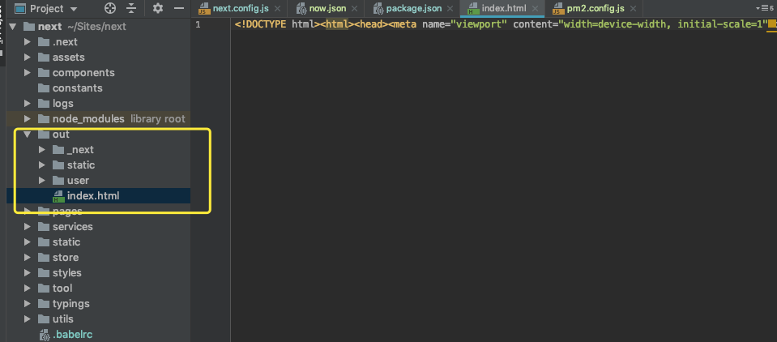
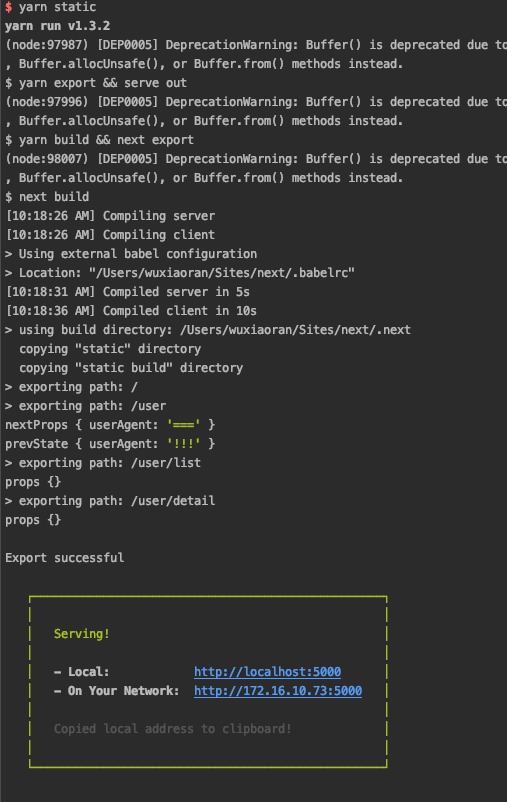
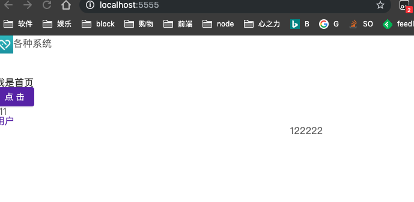
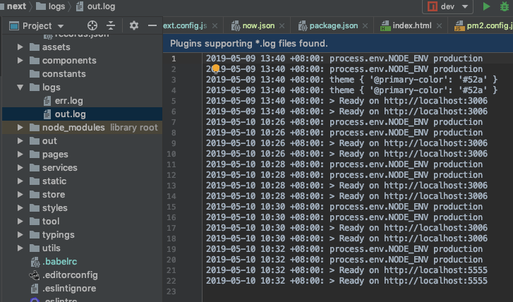
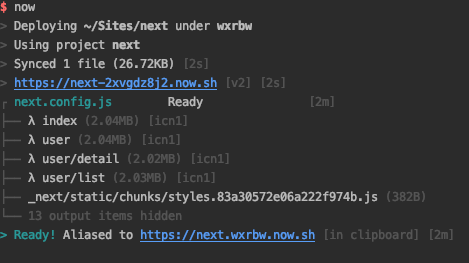
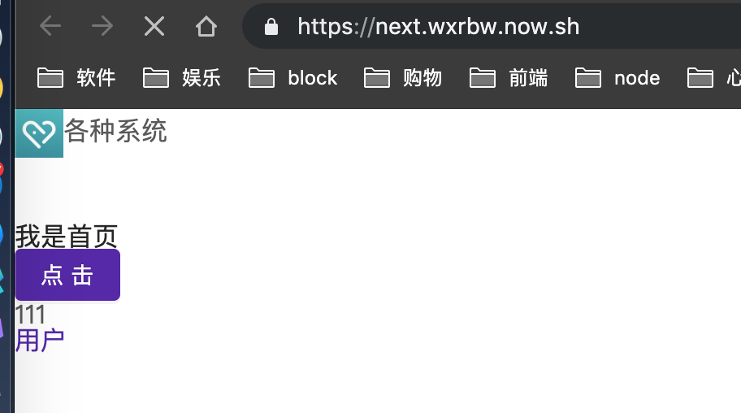

常规部署
Export静态资源
提到发布页面，就不能不提到Next提供的这个功能了，前面也减少过，但是很简单的介绍的，正好这个Demo全是静态页，没有任何数据获取操作～
Export的功能就是通过配置，将对应的pages下的路由页面导出成静态html文件。
export 配置
1 | // package.json |
serve启动
我们通过export命令，会将项目生成一个静态资源文件夹out，如图所示：

其实这个就跟我们正常的SPA应用例如create-react-app生成的build文件夹很像，里面有一个index.html。同理，我们可以使用serve来进行启动～
1 | 1.安装serve |
期间任务失败，主要是antd的less问题，查阅各个网站，目前只能降级到nextjs7.0.2.
1 | (function (exports, require, module, __filename, __dirname) { @import './themes/default'; |
解决问题后，运行后控制台截图，以及访问localhost:5000/

生产环境部署
官方的代码就是将NODE_ENV设置成production即可，就是生产环境～，这里说明一下正好有人问过，如果是windows环境，命令应该变成”prod”: “set NODE_ENV=production && node server.js”
即： yarn build
PM2实现高级部署上线
- 第一步：配置文件
1
2
3
4
5
6
7
8
9
10
11
12
13
14
15
16
17
18
19
20
21
22
23
24
25
26
27
28
29
30
31
32
33
34
35
36
37
38module.exports = {
apps: [
{
// 指定解释器
interpreter: './node_modules/.bin/ts-node',
// 解释器参数 -P 表示项目路径，会自动使用项目的 tsconfig.json
interpreter_args: '-P ./ -r tsconfig-paths/register',
name: 'next', // 应用名称
script: './server.ts', // 启动文件地址
cwd: './', // 当前工作路径
watch: [
// 监控变化的目录，一旦变化，自动重启
'.next',
],
ignore_watch: [
// 从监控目录中排除
'node_modules',
'logs',
'static',
],
instances: 2, // 负载均衡，启动2个实例
node_args: '--harmony', // node的启动模式
env: {
NODE_ENV: 'production', // 设置运行环境，此时process.env.NODE_ENV的值就是development
port: 3006
},
env_production: {
NODE_ENV: 'production',
port: 5555
},
out_file: './logs/out.log', // 普通日志路径
error_file: './logs/err.log', // 错误日志路径
merge_logs: true,
log_date_format: 'YYYY-MM-DD HH:mm Z',
},
],
}; - 第二步：部署服务
1
2# 运行命令
$ pm2 start pm2.config.js --env production
如上图所示，我这边开发环境是3006端口，生产环境是5555端口，使用pm2部署服务以后，访问项目都是正常的，包括API服务。并且pm2还为我们提供日志以及监控功能，详细如下图：
系统所有的控制台输出日志：

now 部署
Next.js原本就是zeit仓库的一个项目，而对应配套的，zeit仓库还有一个now项目，专门进行部署的
now-cli很强大，我只用来部署Next.js项目了，其实它可以支持很多很多种部署，具体如下图
准备工作
首先就是安装now工具了，官方提供下载地址，各种版本的。
1 | // 安装now |
部署踩坑
安装完之后迫不及待的进行尝试，我其实就是按照文档一步一步来做的，文档地址now-next docs。
第一次尝试 - add now.json
新建now.json配置文件，键入如下代码：
{
“version”: 2,
“builds”: [{ “src”: “next.config.js”, “use”: “@now/next” }]
}
复制代码然后运行部署命令:
1 | now |
now会让我们注册，邮件等照做就可以了。
因为我们降级了，所以并没有遇到serverless或publicRuntimeConfig等问题，但是出现了**Unable to import module ‘now__launcher’**的错误。
这个错误是由于在next.config.js中直接引用了withLess之类的插件导致的。在now环境下require插件需要在PHASE_PRODUCTION_SERVER阶段下，如果不加这个阶段的判断就会报错。
我们一般把引用放到文件头部，但这里会出错，向下面这样
1 | const withCSS = require('@zeit/next-css'); // 由于不在PHASE_PRODUCTION_SERVER阶段所以报错 |
正确的写法
1 |
|
在这之后偶尔会出现 **Error! File size limit exceeded (0B)**的错误，重新启动即可。

